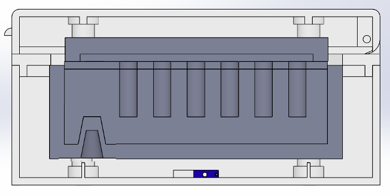
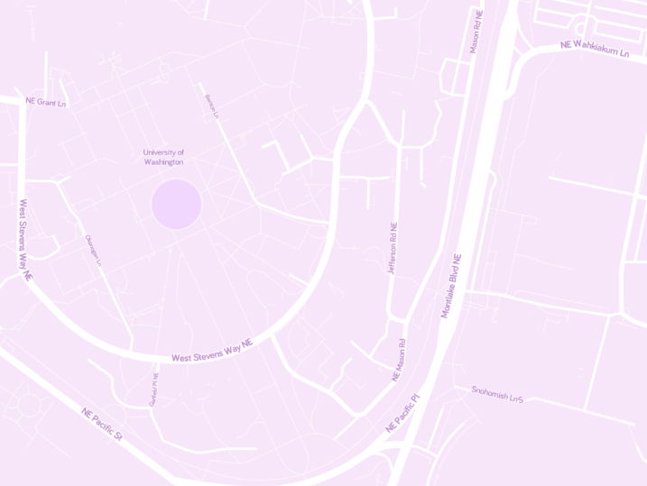
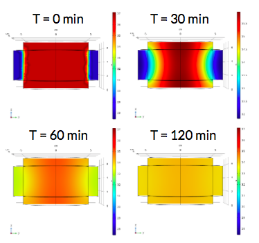

Relataional Database for a Movie Review App
Winter 2021
As apart of my Relational Database Management course in the Informatics department at the University of Washington, I prototyped a database for a Movie Review App. Alongside my team, I drafted the ERD, revised the ERD to a normalized form using ACID base principles, and implemented the database using SQL. Additionally, we added constraints such as the age of a user, how many reviews a user could leave for a given movie, etc. Finally we populated the database and used visualization tools such as Tableau to show the value of our computed columns.
Target Malaria: Mosquito Classification Device
Winter 2020 - Spring 2020
For my senior capstone in the Bioengineering department at the University of Washington, I prototyped a Mosquito Classification Device for Target Malaria, a not for profit consortium that hopes to control the spread of malaria via the implementation of a gene drive. The project consisted of two components, a heating device to run the LAMP assay and an imaging device to record and analyze the results. Towards this, I developed an effective heating element using SOLIDWORKS with circuitry built via TinkerCad. The quality of the heat distribution was evaluated through a multitude of modeling completed in COMSOL. This results of this project were presented at a professional project symposium.
Course Reccomendations Database - Bioengineering
Fall 2019 - Spring 2020
As the Bioengineering curriculum and faculty at the University of Washington can at times seem daunting to students, a clear need in the department was a website by students for students. For my Departmental Honors Project, my team team sought to address this need by designing a website containing bioengineering course reccomendations and professor profiles. In doing so, we conducted various surveys to gain the feedback of my peers, interviewed core faculty members, and effectively displayed information on the website, supported by Wix. Partnering with faculty and academic advisors, Honors students in the coming year will guide the next iteration of the website to expand the scope of courses included.
Husky Maps
Winter 2020
Over the course of my Data Structures and Algorithms class at the UW, I built HuskyMaps, a navigation tool for University of Washington and regions surrounding it. Internally with Java, I implemented A* Search algorithms for path finding, an Autocomplete framework for search bar text suggestions, and used data structures such as k-d Trees and Deques for algorithm efficiency.
20 Questions Game
Fall 2019
Within my second programming course, CSE 143, at the University of Washington, I had the opportunity to build a game of 20 Questions in which a client plays the computer in a guessing game. Throughout this program, I was able to enhance my skills in both binary trees as well as recursion.
Temperature Cooling Cuffs
Spring 2019
Neonatal Asphyxia is extremely common in low resource settings resulting in mortality rates of 68.82 deaths per 100,00 as well as long-term disabilities. In an Engineering Design course, myself alongside a team of my peers were able to address this by designing hypothermia inducing cooling cuffs, a portable, cost-effective method to reduce cerebral metabolism inhibit caspase enzymes and suppress the release of pro-inflammatory cytokines and interleukins. COMSOL modeling was completed to ensure the cuffs were capable of inducing hypothermia.
Thermostat PID Controlled - Tropical Fish Tank
Winter 2019
Fish are ectotherms that rely on their environment to control their temperature, that is their body temperature varies directly with water temperature. Thus, heating and temperature control are necessities for many species of aquarium fish. In my Mass Transport and Systems course at the UW, I developed a PID controlled thermostat using LabView simulations and basic circuitry along with my peers. The group was able to achieve an extremely accurate controlled with maximum fluctuations from the setpoint within 0.7 degrees C, by tuning the PID parameters.